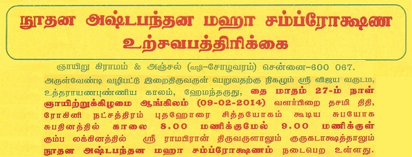

Rama or Ram (राम) is the seventh avatar of the God Vishnu in Hinduism,[1] and a king of Ayodhya in Hindu scriptures. Along with Krishna, the eighth avatar of Vishnu, Rama is considered to be the most important avatar of Vishnu.
Hanuman (IPA: hʌnʊˈmɑn) is a Hindu deity, who was an ardent devotee of Rama according to the Hindu legends. He is a central character in the Indian epic Ramayana and its various versions.
Narasimha (Sanskrit: नरसिंह; Narasiṃha), (Tamil: நரசிம்மர்), Narasingh, Narsingh and Narasingha-in derviative languages is an avatar of the Hindu god Vishnu. Narasimha is often visualised as half-man/half-lion, having a human-like torso and lower body, with a lion-like face and claws. This image is widely worshipped in deity form by a significant number of Vaishnava groups. He is known primarily as the 'Great Protector' who specifically defends and protects his devotees in times of need.
List of videos....
| Pooja Details | Dates | Timing |
|---|---|---|
| Sudarshana Homam | Dec 22 2013 | Morning 7:30 a.m - 1 p.m |
Lord Sudarshana is the chief deity of this powerful Homa who uses his mighty weapon “Chakra” to grant immediate relief to the sufferings of his devotees. Also, your sins are abolished by his grace. Lord Sudarshana/Narayana is considered as the first step to be adopted in the concept of realization of God.
Speciality of Sudarshana Homa
The “Sudarshana Chakra” contains healing characteristics. Therefore performance of Sudarshana Homa relieves you from afflictions of fever and unknown health sufferings. This is the appropriate Homa to perform to conquer your enemies and other evil eye castings. A legend has it that Sudarshana Ashtakam helped recovering people of a village stricken by the plague epidemic.
Please contact Jai Sri Ram Devotees member for booking Sudarshana Homa.
Direction:
| Bus Route | Bus No |
|---|---|
| Broadway <--> Gnayiru Gramam | T57 |
| Koyambedu <--> Gnayiru Gramam | M114C |
| RedHills <--> Gnayiru Gramam | 56C, 58A, 58G |